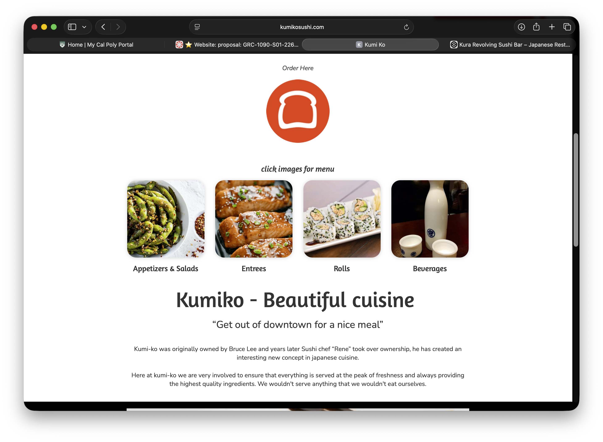
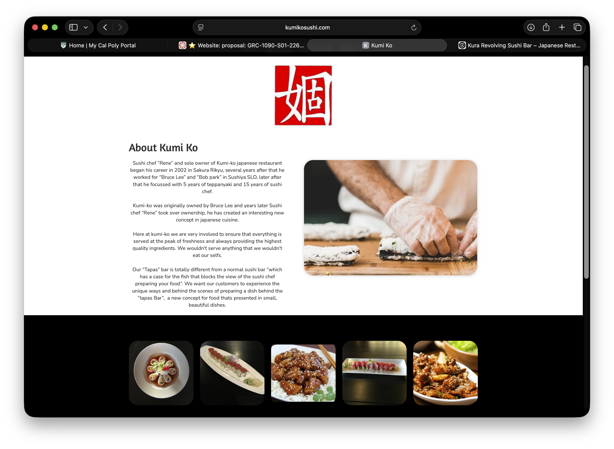
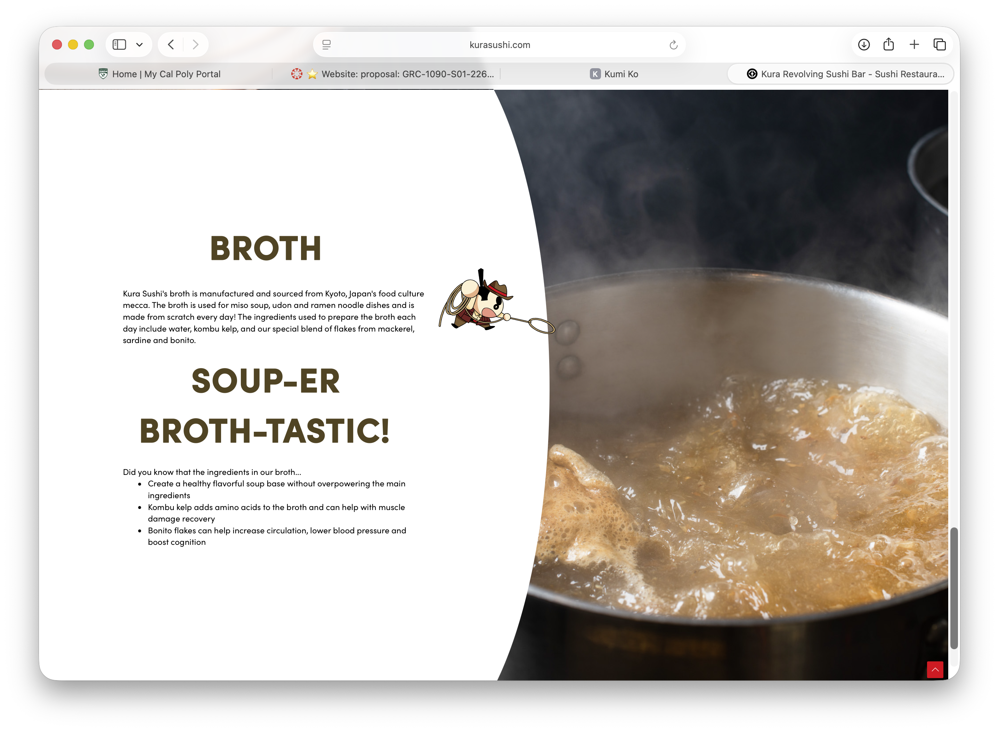
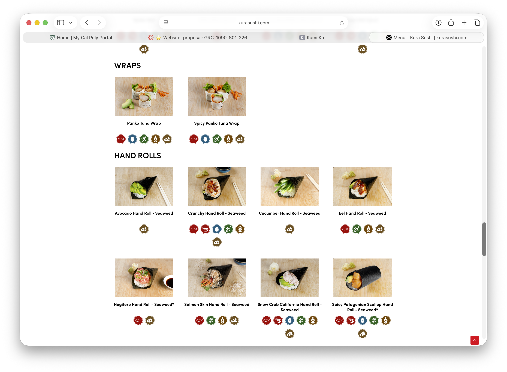
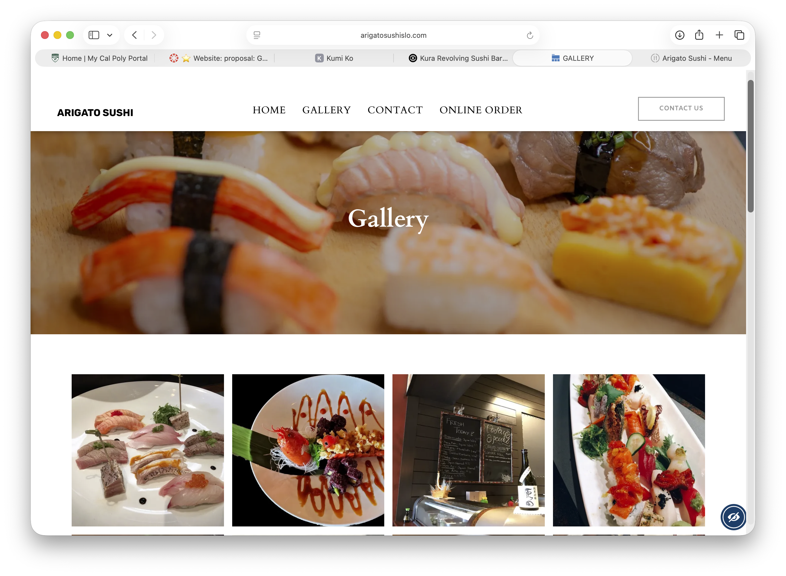
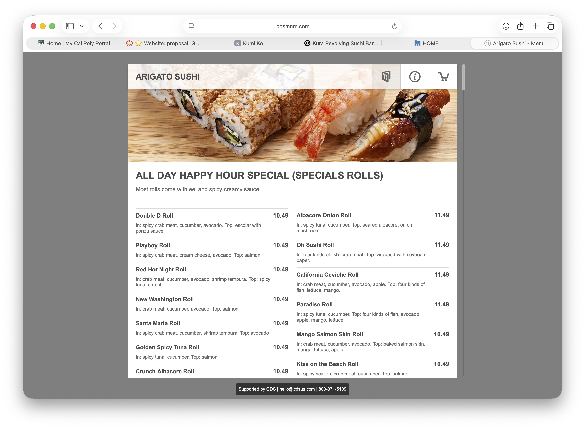

Kumo Kitchen
Kumo Kitchen is a small, modern Japanese restaurant located in San Luis Obispo, California. The restaurant serves affordable Japanese and Asian-inspired comfort food, inlcuding sushi, ramen, poke bowls, onigiri, sashimi, and other creative dishes. Along the traditional favorites, Kumo Kitchen puts a fun twist on Japanese food with items! This includes unique items, such as sushi tacos and sushi burgers. Kumo Kitchen is desiged to feel casual, modern, and welcoming rather than like and expensive sushi restaurant. With only one location, the restaurant focuses on becoming a neighborhood spot for San Luis Obispo locals, college students, families, and visitors who want good Japanese food at reasonable prices
The main target audience for Kumo Kitchen is young aduts, college students, local families, and working adults in the San Luis Obispo area. Since Cal Poly is nearby, college students would be an especially important part of the restaurant's audience.
The customer's primary tasks on the website would likely be to look at the menu, check prices, find the restaurant's location and hours, and decide what they want before visiting or ordering takeout. Their main goal is to quickly find the information they need, decided what they want to eat, and plan their visit or order. Since affordability is important to the restaurant, customers should be able to quickly see what food is available and how much it costs. The website should also appeal to people who may not eat sushi often. Familiar dishes such as ramen, teriyaki, California rolls, and rice bowls make the restaurant approachable, while the more creative items like sushi tacos or just baked sushi give customers something new and exciting to try.






Fesh sushi, warm ramen, and Japanese comfort food without the special-occasion price tag. Kumo Kitchen is your neighborhood spot for familiar favorites and new creations in the heart of San Luis Obispo.
[Table filled with colorful sushi rolls, ramen, and Japanese dishes]
Kumo Kitchen started with a simple idea: Japanese food should be soething you can enjoy any day of the week. We wanted to create a neighborhood restaurant where San Luis Obispo locals could enjoy fresh sushi and comforting Japanese dishes without needing a special occasion. Our menu combines familiar favorites with playful ideas inspired by modern Japanese and Asian cuisine. That means you can keep things classic with salmon sashimi, California ro, or a warm bowl of tonkotsu ramen-or try something different like a crispy sushi taco, sushi burger, or our cheesy ramen miso ramen.
[rastaurant staff preparing sushi together behind the counter]
[close-up of sushi rolls, ramen, and crispy sushi tacos]
One Restaurant. Right Here in SLO. Kumo Kitchen 842 Monterey Street San Luis Obispo, CA 93401 Hours: Monday-Thursday 11:00 AM-9:00 PM Friday-Saturday 11:00 AM-10:00 PM Sunday 12:00 PM-9:00PM Dine In or Take It WIth You Stop by for lunch or dinner, stay awhile with friends, or grab your favorites to go. Takeout is available during all regular business hours. Getting Here We're located near downtown San Luis Obispo, within easy reack of Cal Poly and the surrounding neighborhoods. Street and public parking are available nearby. Contact Phone: (805) 555-0148 Email: hello@kumokitchen.com For questions about ingredients, allergies, large groups, or takeout orders, give us a call during regular business hours.
[Modern Japanese restaurant storefront in downtown San Luis Obispo]